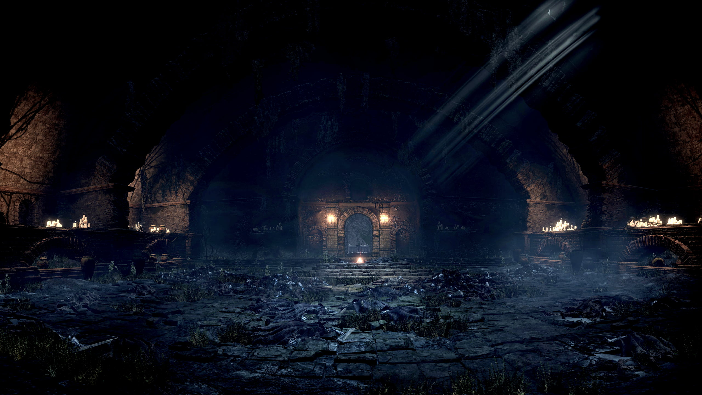

Setting & Story
At the end of all things, the world is fading into ash and darkness as the First Flame, the source of life and light, flickers on the edge of extinction. The ancient Lords of Cinder, champions bound to sacrifice themselves to prolong the age of fire, have abandoned their thrones, refusing to link the flame once more. You arise as an Ashen One, an unquenchable warrior born from the cold embers of a failed sacrifice, tasked with hunting down these fallen lords and bringing their souls back to Firelink Shrine to force one final reckoning before the world falls into complete darkness.

Journeying through the decaying, solemn landscapes of Lothric, the toxic swamps of Farron, and the frozen spires of Irithyll, you witness the heartbreaking weight of a cycle repeated far too many times. Every kingdom you explore is a monument to stagnation, filled with hollowed knights, twisted abominations, and tragic remnants of an age that refuses to die naturally. As you stand before the Soul of Cinder at the kilns of the First Flame, the ultimate decision falls on your shoulders: burn yourself once again to buy a few fleeting moments of light, or let the flame fade into a peaceful, quiet dark.
